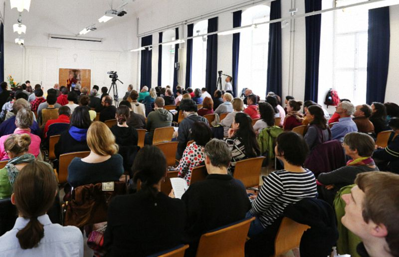
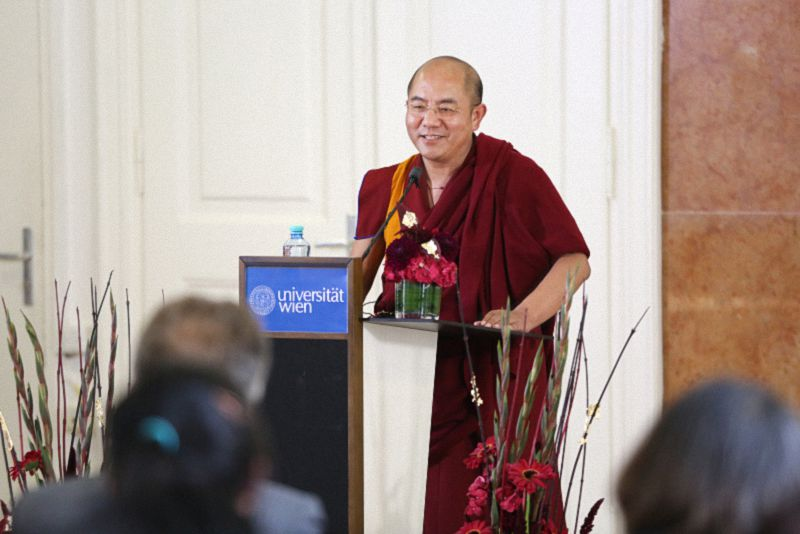
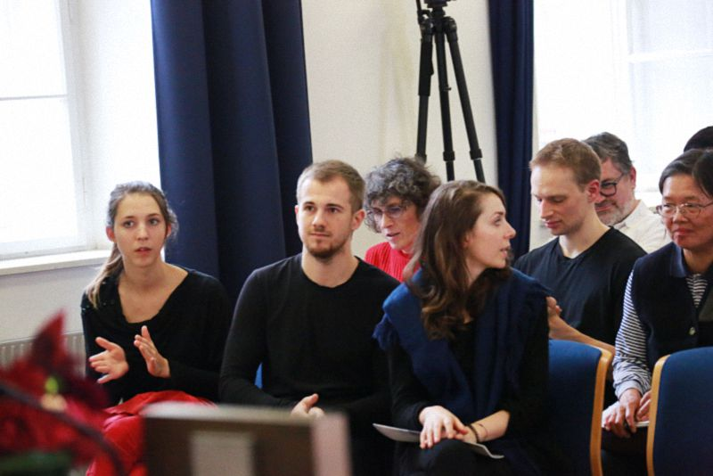

藏传金刚乘的特点——奥地利维也纳大学演讲
『2015年10月9日』

主持人：
热烈欢迎索达吉堪布仁波切！
堪布是著名的佛教善知识，他来自位于中国四川的喇荣五明佛学院。堪布做过很多讲座，以讲解藏传佛教而闻名，尤其是其中的金刚密乘，可以理解为印度佛教发展的后续。很荣幸有机会听这样一位大德诠释藏传佛教的特点，有请索达吉堪布仁波切开示——
一次关于密法的珍贵交流
对佛教徒而言，研究金刚密乘是极为难得的机会。今天能跟各位老师、同学，以及来自不同地方的人一起，围绕藏传金刚乘进行交流，我个人非常感谢。
我来自藏地，与你们相聚在欧洲，虽然我们的生活习惯、思维方式各不相同，但在追求快乐、远离痛苦方面，应该是一致的。
还有一个让我惊讶的巧合。在藏地牧区，草地上有一种白色的花叫“扎嘉哈沃”，雪绒花。小时候放牛，不论我走到哪里，都有它的陪伴。它也是一种药草，牧区的人常常用它治病。前两天，我在奥地利看到了这种花，据说还是你们珍贵的国花。可见，虽然东西方有不同的价值观，但对某些事物也会有同样的感受，比如都爱雪绒花。
雪绒花象征着勇敢、不被任何因缘所动摇的智慧，等等。所以，这次的碰撞、研讨，我也认为非常珍贵。
追求什么最有价值？
今天研讨的主题是“藏传金刚乘的特点”，这是主办方的要求，但我看除了少数老师和学生，其他人对此不一定特别关心、重视。如今大多数人更重视生活中的痛苦，重视积累财富，满足现实生活的需要。至于对佛法乃至金刚密乘的研究，在很多学校都比较罕见。你们能提出这样的需求，我觉得很欣喜，接下来为大家做一个简略的介绍。
在跟维也纳大学的老师交流中，我得知这所学校对藏传佛教的研究已经坚持了八十年。老师中有研究大手印的，有研究直贡噶举的，也有研究《释量论》等五部大论的，其他与藏传佛教及藏文化相关的学习和研究也非常深广，直到现在，仍有很多优秀的老师在坚持学习。我对此特别随喜，因为即便是藏族的一些格西和堪布，也不一定能做到。
如今研究佛教的人，有些是为了传播、护持佛法，让更多不了解的人都来了解；有些是为了找佛法的漏洞，以进行驳斥；有些则是为了商业利益或其他目的。但不管怎样，能够研究佛法就很好。不仅是佛法，对世间的任何知识，有一种钻研、学习的心，也会有相应的收获。人的一生可以有很多追求，求名、求利都无可厚非，但最有价值的努力，还是对智慧的寻求。
可以用学术方式研究密法吗？
而对于研究佛教的学者，我一方面很随喜，另一方面也有一些建议。去年在美国，我就跟那里的很多老师直言不讳地提过：藏传佛教的金刚密乘，分为理论和实修两个层面，理论部分可以依照显宗因相乘的方式来学习；但甚深的修行窍诀，用学术研究的方式撰写论文、随意注释，这不太合理。
虽然密法的理论和实修都很究竟，但实修法还是与理论有很多区别，第一点就是不能随随便便对外宣讲，因为会泄露秘密。
有些人觉得：“密法那么殊胜，为什么要保密？应该让更多人知道。”但实际上，密法不是因为有什么缺陷、过失才需要保密的，而是对这些实修窍诀，如果能秘密修持，自己更容易获得成就，这也是一种世间的缘起规律。
前天在法国格勒诺布尔，有很多人给我敬酒，我说我不喝酒，全都谢绝了。但这种酒非常好，是源自耶稣教徒代代相传的秘方，至今已有两三百年历史，据说用了一百多种材料，按照严格的程序酿造而成。配方和程序都是保密的，由父亲传给儿子，儿子传给孙子，绝不外传，直到现在，除了酿酒人的家族，其他人对此都一无所知。可见，世间的一些事也要用保密的方式，才会呈现出不共的功德和成果。
其实，金刚密乘极其甚深，有着不可思议的力量和加持，如果真能懂得其中意义，对内心会有很大帮助。现在世界上的很多地方，汉地、欧洲、美国……都有不少关注金刚密乘的人，一方面可能出于对新鲜事物的好奇，另一方面，如果密法对心灵没有好处，短暂的热情过后，人们也会舍弃，但这股热潮长盛不衰，证明从中的确能获得利益。所以，并非因为我是藏族人，就在这里替藏传佛教打广告、求赞叹，而是我了解它的价值，也对此有切身体会。
21世纪了，还要修五加行吗？
密法确实殊胜，但今天的人们想要做到如理如法修行，很困难。比如藏传佛教中极为高深的密法：噶举派大手印和宁玛派大圆满，各个传承上师都要求首先圆满五加行——磕十万大头、念修十万发心偈、念修十万皈依偈、修十万曼茶、念修十万金刚萨埵百字明。总共五十万修量，是每个修行人必须完成的，否则，不能听受相关的实修窍诀和引导。直到现在还是这样的传统。
但也有上师说，已经21世纪了，人们都很忙，修五加行只是过去的传统。他们有的认为不用修，有的认为不用全部修，还有的说可以用其他方法替代。
以前康区的一位上师，去汉地的时候，信众问要不要修五加行，他当时正在筹钱建寺院，便说如果交钱就不用修，每个加行是120元，五个加行是600元。这是五年前的事，现在全球经济都在变化，五加行的“价格”应该也变了。（笑）这样做是违背传统的，我认为非常不好。
还有人说，西方的修行人特别忙，应该可以通融。但我想西方也好、东方也好，每个人都很忙，关键看你对佛法有多少信心。
事实上，在修甚深法之前先修加行，是为了打好基础，比如共同前行中要修四种厌离心：暇满难得、寿命无常、因果不虚、轮回过患；不共前行中有皈依、发心、曼茶等五项，这对修行者来说，是必不可少的修炼。
虽然我本人没有多高境界，但在任何地方传讲大圆满，都会要求听受的人得过灌顶、圆满过五加行，否则是不敢讲的。

理论研究的利益和误区
如前所说，密法通常有理论和实修两方面，如果暂时不能实修，也可以先学习理论，用智慧对教理进行观察、论证、反复研究，形成正确的见解也很好。
我看到有的老师正在学习《宝性论》、中观论典、噶举派的《大乘佛法精要》等法要，做了很多翻译、研究工作，这非常有意义。因为在学习过程中，依靠佛法调伏内心，人会变得更加柔和、快乐。这种改变需要自己体会，就像糖的甜味要亲口品尝才知道。
但在理论研究中，也要避免一些误区。比如有些学者，从词句上比对，看到印度吠陀教和藏传佛教中有相同的续部、经论，再从年月上考据，看到某个历史时期发生过怎样的变迁，就认为藏传佛教受吠陀教影响，甚至从吠陀教发展而来，这是不合理的。关于这方面，汉地有很多学者，奥地利也有，还有藏地的格西、堪布、上师，他们都有自己的智慧和观点，希望大家能坐下来，面对面地研讨、交流。
像藏地的那杰仁钦，是贡罗匝瓦的上师，他就曾三次去西藏研习佛法。那个时候去西藏相当困难，而今天交通便利、大道通衢，研究佛法的学者更应该亲自去藏地的寺院探访，这很有必要。
以上是对热衷于藏传佛教尤其是密法之人的建议，而对密法既没有信心也不想了解的人，知不知道都没关系。
显宗和密宗的重要差别
另外想强调的是，显宗因相乘和金刚密乘有很大区别。
（一）关于众生与佛的关系
正如《桑波扎续》所说：“法相显宗许，众生即佛因。金刚密乘许，众生即是佛。”在显宗因相乘看来，众生是成佛的因，如同种子生果一般，从凡夫位逐渐积资净障而成就佛果；但在密宗金刚乘看来，众生当下就是佛，具有佛的种姓，在凡夫位是自性清净，在佛位是离垢清净。佛经中常用王子的比喻来说明：刚出生的小王子虽然还没有登上王位，但他是国王种姓，是未来的国王。
因此，关于众生和佛的关系，显宗认为是能生所生：佛依于众生而产生，就像果依靠种子而长成；密宗则认为是能显所显：心被忽然出现的客尘遮障就是凡夫，远离了客尘就是佛陀。
（二）密宗的四种超胜
密宗还有四种超胜显宗的特点。《三相灯论》中讲到：“一义亦不昧，不难方便多。是为利根故，极胜秘密乘。”
第一，一义亦不昧
从所观察的实相上，密宗和显宗没有区别；但在能观察的智慧上，密宗有特殊的观心窍诀，可以更加直接、如实地认识心性。这是从见解方面来说。
第二，不难方便多
从修行方面，密宗有生起次第和圆满次第、方便道和解脱道等很多方便方法，与显宗相比，无需经历长劫的艰苦修行，就能快速、轻易获得成就，这样的例子数不胜数。
第三，是为利根故
从补特伽罗方面，密宗是为利根者所说的法。所谓利根者，要具足信根、精进根、慧根等五根，其中以信根最为重要：对上师和佛法有不退转的信心。信心坚固之后再去修行，很容易圆满通达而获得成就。
第四，极胜秘密乘
佛法有众多修持法门，无论哪一种，最终都是观心的本性而证悟。面对生活中层出不穷的烦恼，密宗的方式是当下观察它的本体，于是发现过去的烦恼已经灭尽、现在的烦恼没有自性、未来的烦恼尚未产生，此时，哪怕再大的贪心、嗔心，都会如彩虹般自然消失。这是藏传佛教中最重要的窍诀，也由此说金刚密乘是所有佛法中最殊胜的一乘。
用佛法智慧，保持寂静的心
实际上，密宗与显宗的见解在究竟上并无二致。显宗经典中说：“于心无有心，心性即光明。”当我们用心观心，此时心的本体了不可得，如同虚空；心的自性光明不灭；光明与空性无二无别，即是明空双运。
这些法要，如果能在生活中常常观察、修持，会有很大利益，至少，你可以从佛法中得到快乐。
21世纪的人们，一方面有很多便利和满足：交通、手机、网络……每天，世界上遥远角落发生的任何事，都可以立刻呈现在面前，眼睛能看到，耳朵能听到。
但另一方面，也产生了更多痛苦。一个人可以有无止境的需求——更豪华的房子、更高档的轿车、更显赫的地位，等等，而其中有很多，并不是生活的必需，人们却为此不断希求和忧虑；面对大量信息，内心也会感到烦躁、紧张、不安。此时，最好能用佛法的方式，让心专注、放松、安住。无论是不是修行人，有一颗寂静的心，都很重要。
还有很多人，找不到来这个世间的真正意义。有些人认为，读很多书、拿高学位、成就事业、结婚生子，就算圆满了一生；但经常观察自心的修行人，或者做其他学问的研究者，对人生的意义、幸福的内涵，会有更深层的领悟。
人生在世，应该追寻更高品质的生活。而能在修行和研究佛法中度过一生，尤为珍贵。生活原本是苦的自性，如果不懂佛法奥义，我们会为重重的欲望所累——将所有的贪求付诸实现，谈何容易？
哪怕只懂得无常，也更能面对生死
我自身而言，三十多年中一直在研究佛法，辩论、写作、翻译、传法，人生多半的岁月都是这样走来；我也见过很多人，汉族人、藏族人，东方人、西方人，见到佛法对他们的改变，因此始终认为修行非常重要。哪怕只是在禅修中观想过“寿命无常”，对生活中的种种际遇也会平常看待，反之可能难以面对。
前两天，有个人的父亲去世了，他哭得非常伤心。从世间层面讲，这是人之常情，谁的父亲死了不难过？但如果是修行人，他知道生老病死是人生的自然规律，谁都有死亡的一天，就不至于如此痛苦。
还有人很怕衰老，“我脸上有皱纹了！”内心特别悲伤，其实不用这样。如果观想过寿命无常，起码在这些事情上，你能马上得到利益。
我对奥地利不是很了解，但在其他一些地方，关于生老病死，尤其是死亡的历程，人们的确不愿意了解，觉得不吉祥。比如，中国汉地就有很多人忌讳谈到跟死有关的话题。
但只要是人，都会经历死亡，而佛法中有很多这方面的知识，关于死亡的时间、原因，讲过各种各样的情况。如果能对此有所了解，经常观修无常，一旦遇到夫妻离异、伴侣死亡等变故，你不会因为失去对方而无法生活，这就是一种直接的利益。
总之，佛法的修持，能让我们真实面对生活中的一切，将烦恼、痛苦转为道用。同时，还要勇敢、坚强。很多人的幸福，是“没有他，我就不幸福”，把自己的幸福建立在别人身上，不要这样。自己的幸福，应该自己去关心、去追寻，这样，你的生活才会更加美好。
